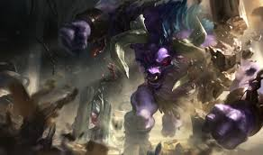
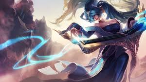
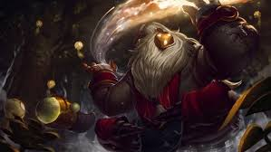

Supports do their best to make their team look good, whether it's providing them with kills or keeping them from death. Supports dwell in the bottom lane with their partners but are meant to assist wherever their team needs them. Rather than focusing on damage and going for kills, supports make themselves and their team harder to kill while catching opponents for their teammates who deal damage to take them down. These characters can range from utility mages who buff their teammates to high-crowd control tanks that stop enemies in their tracks.

Alistar is the League's resident minotaur (or Battle Cow as I call him). An incredibly tanky support, Alistar knocks his opponents around to keep his allies safe and his enemies is bad situations.

Sona uses her musical instrument to play different melodies, each one providing a different buff to her allies and debuff to her enemies. She requires fast fingers and can adapt quickly to any situation.

Bard is a support that benefits greatly from roaming around the map. He is an incredibly slippery and mobile character that can easily catch the enemy off-guard when paired with an unexpected ally or two.